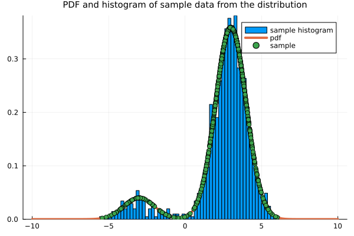
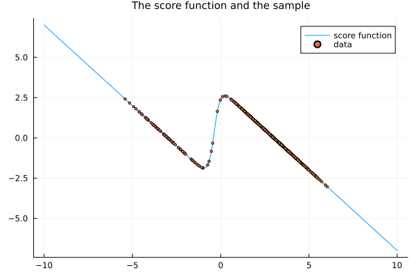
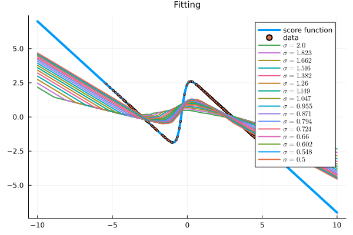
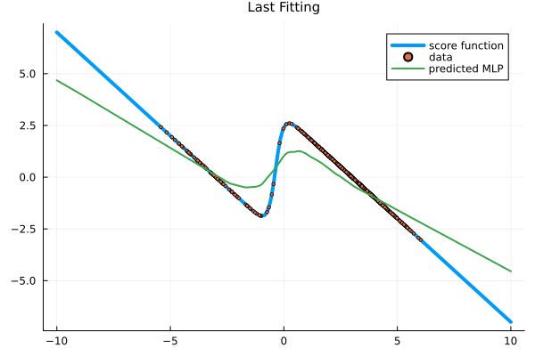
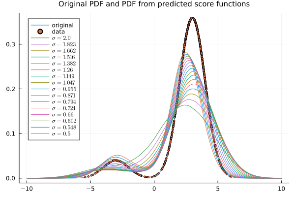
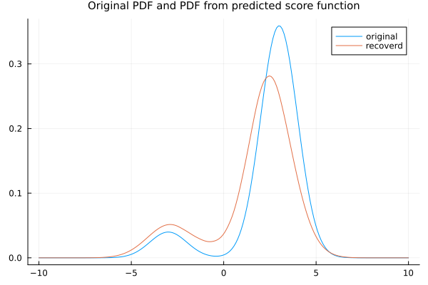
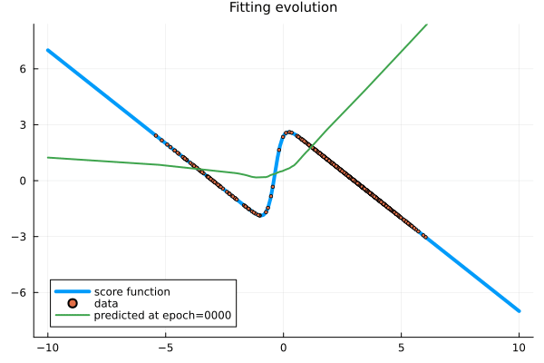
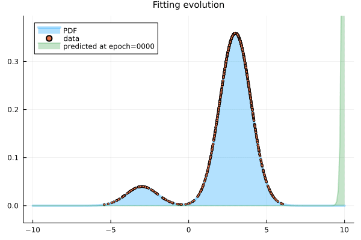
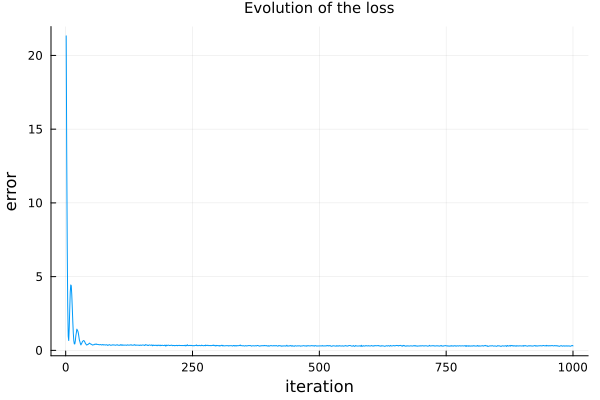
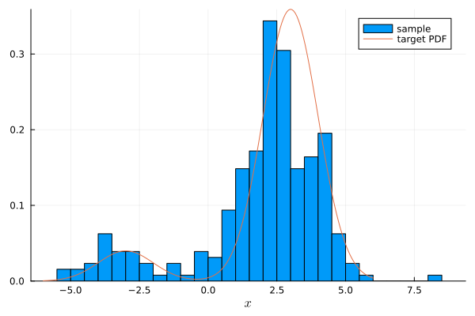

Multiple denoising score matching with annealed Langevin dynamics
Introduction
Aim
Review the (multiple denoising) score matching with Langevin dynamics (SMLD), which fits a noise conditional score network (NCSN), as introduced by Song and Ermon (2019), which together with DDPM was one step closer to the score-based SDE model.
Background
After Aapo Hyvärinen (2005) suggested fitting the score function of a distribution, several directions were undertaken to improve the quality of the method and make it more practical.
One of the approaches was the denoising score matching of Pascal Vincent (2011), in which the data is corrupted by a Gaussian noise and the model was trained to correctly denoise the corrupted data. The model itself would either be of the pdf itself or of an energy potential for the pdf. In any case, one would have a model for the pdf and could draw samples directly using that.
Song and Ermon (2019) came with two ideas tied together. The first idea was to model directly the score function and use the Langevin equation to draw samples from it. One difficulty with Langevin sampling, however, is in correctly estimating the weights of multimodal distributions, either superestimating or subestimating some modal regions, depending on where the initial distribution of points is located relative to the model regions. It may take a long time to reach the desired distribution.
In order to overcome that, Song and Ermon (2019) also proposed using an annealed version of Langevin dynamics, based on a scale of denoising score matching models, with different levels of noise, instead of a single denoising. Lower noises are closer to the target distribution but are challenging to the Langevin sampling, while higher noises are better for Langevin sampling but depart from the target distributions. Combining different levels of noise and gradually sampling between different denoising models improve the modeling and sampling of a distribution. That is the idea of their proposed noise conditional score network (NCSN) framework, in a method that was later denominated denosing score matching with Langevin dynamics (SMLD), and for which a more precise description would be (multiple denosing) score matching with (annealed) Langevin dynamics.
Multiple denoising score matching
The idea is to consider a sequence of denoising score matching models, starting with a relatively large noise level $\sigma_1$, to avoid the difficulties with Langevin sampling described earlier, and end up with a relatively small noise level $\sigma_L$, to minimize the noisy effect on the data.
For training, one trains directly a score model according to a weighted loss involving all noise levels.
Then, for sampling, a corresponding sequence of Langevin dynamics, with decreasing levels of noise, driving new samples closer and closer to the target distribution.
The model
More precisely, one starts with a positive geometric sequence of noise levels $\sigma_1, \ldots, \sigma_L$ satisfying
\[ \frac{\sigma_1}{\sigma_2} = \cdots = \frac{\sigma_{L-1}}{\sigma_L} > 1,\]
which is the same as
\[ \sigma_i = \theta^{i-1} \sigma_1, \quad i = 1, \ldots, L,\]
for a starting $\sigma_1 > 0$ and a rate $0 < \theta < 1$ given by $\theta = \sigma_2/\sigma_1 = \ldots = \sigma_L/\sigma_{L-1}$.
For each $\sigma=\sigma_i$, $i=1, \ldots, L$, one considers the perturbed distribution
\[ p_{\sigma}(\tilde{\mathbf{x}}) = \int_{\mathbb{R}^d} p(\mathbf{x})p_{\sigma}(\tilde{\mathbf{x}}|\mathbf{x})\;\mathrm{d}\mathbf{x},\]
with a perturbation kernel
\[ p_{\sigma}(\tilde{\mathbf{x}}|\mathbf{x}) = \mathcal{N}\left(\tilde{\mathbf{x}}; \mathbf{x}, \sigma^2 \mathbf{I}\right).\]
This yields a sequence of perturbed distributions
\[ \{p_{\sigma_i}\}_{i=1}^L.\]
We model the corresponding family of score functions $\{s_{\boldsymbol{\theta}}(\tilde{\mathbf{x}}, \sigma_i)\}$, i.e. such that $s_{\boldsymbol{\theta}}(\tilde{\mathbf{x}}, \sigma_i)$ approximates the score function of $p_{\sigma_i}$, i.e.
\[ s_{\boldsymbol{\theta}}(\tilde{\mathbf{x}}, \sigma_i) \approx \boldsymbol{\nabla}_{\tilde{\mathbf{x}}} \log p_{\sigma_i}(\tilde{\mathbf{x}}).\]
The noise conditional score network (NCSN) is precisely
\[ s_{\boldsymbol{\theta}}(\tilde{\mathbf{x}}, \sigma).\]
The loss function
One wants to train the noise conditional score network $s_{\boldsymbol{\theta}}(\tilde{\mathbf{x}}, \sigma)$ by weighting together the denosing loss function of each perturbation, i.e.
\[ J_{\textrm{SMLD}}(\boldsymbol{\theta}) = \frac{1}{2L}\sum_{i=1}^L \lambda(\sigma_i) \mathbb{E}_{p(\mathbf{x})p_{\sigma_i}(\tilde{\mathbf{x}}|\mathbf{x})}\left[ \left\| s_{\boldsymbol{\theta}}(\tilde{\mathbf{x}}, \sigma_i) - \frac{\mathbf{x} - \tilde{\mathbf{x}}}{\sigma_i^2} \right\|^2 \right],\]
where $\lambda = \lambda(\sigma_i)$ is a weighting factor.
In practice, we use the empirical distribution and a single corrupted data for each sample data, i.e.
\[ {\tilde J}_{\textrm{SMLD}}(\boldsymbol{\theta}) = \frac{1}{2LN} \sum_{n=1}^N \sum_{i=1}^L \lambda(\sigma_i)\left\| s_{\boldsymbol{\theta}}(\tilde{\mathbf{x}}_{n, i}, \sigma_i) - \frac{\mathbf{x}_n - \tilde{\mathbf{x}}_{n, i}}{\sigma_i^2} \right\|^2, \quad \tilde{\mathbf{x}}_{n, i} \sim \mathcal{N}\left(\mathbf{x}_n, \sigma^2 \mathbf{I}\right).\]
This can also be written with a reparametrization,
\[ {\tilde J}_{\textrm{SMLD}}(\boldsymbol{\theta}) = \frac{1}{2LN} \sum_{n=1}^N \sum_{i=1}^L \lambda(\sigma_i) \left\| s_{\boldsymbol{\theta}}(\mathbf{x}_n + \boldsymbol{\epsilon}_{n, i}, \sigma_i) + \frac{\boldsymbol{\epsilon}_{n, i}}{\sigma_i} \right\|^2, \quad \boldsymbol{\epsilon}_{n, i} \sim \mathcal{N}\left(\mathbf{0}_n, \mathbf{I}\right).\]
As for the choice of $\lambda(\sigma)$, Song and Ermon (2019) suggested choosing
\[ \lambda(\sigma) = \sigma^2.\]
This comes from the observation that,
\[ \|s_{\boldsymbol{\theta}}(\tilde{\mathbf{x}}_n, \sigma_i)\|^2 \sim \frac{1}{\sigma_i},\]
hence
\[ \lambda(\sigma_i)\left\| s_{\boldsymbol{\theta}}(\mathbf{x}_n + \boldsymbol{\epsilon}_{n, i}, \sigma_i) + \frac{\boldsymbol{\epsilon}_{n, i}}{\sigma_i} \right\|^2 \sim 1\]
is independent of $i=1, \ldots, L$. Choosing such weighting, the loss function becomes
\[ {\tilde J}_{\textrm{SMLD}}(\boldsymbol{\theta}) = \frac{1}{2LN} \sum_{n=1}^N \sum_{i=1}^L \left\| \sigma_i s_{\boldsymbol{\theta}}(\tilde{\mathbf{x}}_{n, i}, \sigma_i) - (\mathbf{x}_n - \tilde{\mathbf{x}}_{n, i})\right\|^2, \quad \tilde{\mathbf{x}}_{n, i} \sim \mathcal{N}\left(\mathbf{x}_n, \sigma^2 \mathbf{I}\right).\]
Sampling
For each $i=1, \ldots, L$, the dynamics of the overdamped Langevin equation
\[ \mathrm{d}X_t = \boldsymbol{\nabla}_{\tilde{\mathbf{x}}} \log p_{\sigma_i}(\tilde{\mathbf{X}}_t)\;\mathrm{d}t + \sqrt{2}\;\mathrm{d}W_t\]
drives any initial sample towards the distribution defined by $p_{\sigma_i}$. With $s_{\boldsymbol{\theta}}(\tilde{\mathbf{x}}, \sigma_i)$ being an approximation of $\boldsymbol{\nabla}_{\tilde{\mathbf{x}}} \log p_{\sigma_i}(\tilde{\mathbf{x}})$ and with $p_{\sigma_i}(\tilde{\mathbf{x}})$ being closer to the target $p(\mathbf{x})$ the smaller the $\sigma_i$, the idea is to run batches of Langevin dynamics for decreasing values of noise, i.e. for $\sigma_1$ down to $\sigma_L$.
More precisely, given $K\in\mathbb{N}$, we run the Langevin equation for $K$ steps, for each $i=1, \ldots, L$:
1. Start with a $M$ sample points $\mathbf{y}_m$, $m=1, \ldots, M$, $M\in\mathbb{N}$, of a multivariate Normal distribution, or a uniform distribution, or any other known distribution.
2. Then for each $i=1, \ldots, L$, run the discretized overdamped Langevin equation for $K$ steps
\[ \mathbf{y}^i_{m, k} = \mathbf{y}^i_{m, k-1} + s_{\boldsymbol{\theta}}(\tilde{\mathbf{y}}^{i-1}_{m, k-1}, \sigma_i) \tau_i + \sqrt{2\tau_i}\mathbf{z}^i_{m, k},\]
where $\tau_i > 0$ is a given time step (which may or may not vary with $i$); the $\mathbf{z}^i_{m, k} \sim \mathcal{N}(\mathbf{0}, \mathbf{I})$ are independent; and the initial conditions are given by
\[ \mathbf{y}^1_{m, 0} = \mathbf{y}_m,\]
for $i=1$, and
\[ \mathbf{y}^i_{m, 0} = \mathbf{y}^{i-1}_{m, K},\]
for $i = 2, \ldots, L$, i.e. the final $K$th-step of the solution of the Langevin equation with a given $i = 1, \ldots, K-1$ is the initial step of the Langevin equation for $i+1$.
3. The final points $\mathbf{y}^L_{m, K}$, $m=1, \ldots, M$, are the $M$ desired new generated samples of the distribution approximating the data distribution.
Numerical example
We illustrate, numerically, the use of multiple denoising score matching to model a synthetic univariate Gaussian mixture distribution.
Julia language setup
We use the Julia programming language for the numerical simulations, with suitable packages.
Packages
using StatsPlots
using Random
using Distributions
using Lux # artificial neural networks explicitly parametrized
using Optimisers
using Zygote # automatic differentiation
using MarkdownReproducibility
We set the random seed for reproducibility purposes.
rng = Xoshiro(12345)Data
We build the usual target model and draw samples from it.
Visualizing the sample data drawn from the distribution and the PDF.
Visualizing the score function.
Parameters
Here we set some parameters for the model and prepare any necessary data.
L = 16
sigma_1 = 2.0
sigma_L = 0.5
theta = ( sigma_L / sigma_1 )^(1/(L-1))
sigmas = [sigma_1 * theta ^ (i-1) for i in 1:L]16-element Vector{Float64}:
2.0
1.8234449771164336
1.6624757922855755
1.515716566510398
1.381912879967776
1.2599210498948732
1.1486983549970349
1.0472941228206265
0.9548416039104165
0.8705505632961241
0.7937005259840997
0.723634618720189
0.6597539553864471
0.6015125180410583
0.548412489847313
0.5data = (sample_points, sigmas)([2.303077959422043 2.8428423932782843 … 3.1410080972036334 2.488464630750972], [2.0, 1.8234449771164336, 1.6624757922855755, 1.515716566510398, 1.381912879967776, 1.2599210498948732, 1.1486983549970349, 1.0472941228206265, 0.9548416039104165, 0.8705505632961241, 0.7937005259840997, 0.723634618720189, 0.6597539553864471, 0.6015125180410583, 0.548412489847313, 0.5])The neural network model
The neural network we consider is a simple feed-forward neural network made of a single hidden layer, obtained as a chain of a couple of dense layers. This is implemented with the LuxDL/Lux.jl package.
We will see that we don't need a big neural network in this simple example. We go as low as it works.
model = Chain(Dense(2 => 64, relu), Dense(64 => 1))Chain(
layer_1 = Dense(2 => 64, relu), # 192 parameters
layer_2 = Dense(64 => 1), # 65 parameters
) # Total: 257 parameters,
# plus 0 states.The LuxDL/Lux.jl package uses explicit parameters, that are initialized (or obtained) with the Lux.setup function, giving us the parameters and the state of the model.
ps, st = Lux.setup(rng, model) # initialize and get the parameters and states of the model((layer_1 = (weight = Float32[0.96560603 -1.3963945; -0.864941 1.1274849; … ; 0.7158331 1.1567085; 2.3663533 1.2393725], bias = Float32[0.18311752, 0.4076413, 0.6408686, -0.013799805, 0.65769726, 0.27097112, -0.11596697, 0.48491788, -0.42007604, 0.118874006 … 0.1418748, -0.5943321, -0.60492563, 0.5363705, 0.31154066, -0.022509282, 0.3484151, 0.14444627, 0.36740452, -0.6803152]), layer_2 = (weight = Float32[0.09065902 0.13053486 … 0.042090528 0.21522477], bias = Float32[0.004801482])), (layer_1 = NamedTuple(), layer_2 = NamedTuple()))Loss function
function loss_function_mdsm(model, ps, st, data)
sample_points, sigmas = data
noisy_sample_points = sample_points .+ sigmas .* randn(rng, size(sample_points))
scores = ( sample_points .- noisy_sample_points ) ./ sigmas .^ 2
flattened_noisy_sample_points = reshape(noisy_sample_points, 1, :)
flattened_sigmas = repeat(sigmas', 1, length(sample_points))
model_input = [flattened_noisy_sample_points; flattened_sigmas]
y_score_pred, st = Lux.apply(model, model_input, ps, st)
flattened_scores = reshape(scores, 1, :)
loss = mean(abs2, flattened_sigmas .* (y_score_pred .- flattened_scores)) / 2
return loss, st, ()
endloss_function_mdsm (generic function with 1 method)Optimization setup
Optimization method
We use the Adam optimiser.
opt = Adam(0.01)
tstate_org = Lux.Training.TrainState(model, ps, st, opt)TrainState(
Chain(
layer_1 = Dense(2 => 64, relu), # 192 parameters
layer_2 = Dense(64 => 1), # 65 parameters
),
number of parameters: 257
number of states: 0
optimizer: Optimisers.Adam(eta=0.01, beta=(0.9, 0.999), epsilon=1.0e-8)
step: 0
)
Automatic differentiation in the optimization
As mentioned, we setup differentiation in LuxDL/Lux.jl with the FluxML/Zygote.jl library.
vjp_rule = Lux.Training.AutoZygote()ADTypes.AutoZygote()Processor
We use the CPU instead of the GPU.
dev_cpu = cpu_device()
## dev_gpu = gpu_device()(::MLDataDevices.CPUDevice{Missing}) (generic function with 1 method)Check differentiation
Check if Zygote via Lux is working fine to differentiate the loss functions for training.
Lux.Training.compute_gradients(vjp_rule, loss_function_mdsm, data, tstate_org)((layer_1 = (weight = Float32[2.24268 0.7496106; 0.2701228 0.27481318; … ; 1.0937802 0.41069224; 5.6002707 2.0936315], bias = Float32[0.5180968, 0.16000718, 0.026133753, -0.32105532, 0.01996234, -0.53315395, -0.13178797, 0.0014373355, 0.058482938, 0.36684003 … -0.6349388, -0.015089363, -0.7687205, 0.025982726, -0.8973341, -0.035599682, 0.022229744, -0.0066108867, 0.27588746, 1.4066838]), layer_2 = (weight = Float32[13.387149 1.0834881 … 32.29652 69.18358], bias = Float32[6.572551])), 22.073953377107767, (), Lux.Training.TrainState{Nothing, Nothing, Lux.Chain{@NamedTuple{layer_1::Lux.Dense{typeof(NNlib.relu), Int64, Int64, Nothing, Nothing, Static.True}, layer_2::Lux.Dense{typeof(identity), Int64, Int64, Nothing, Nothing, Static.True}}, Nothing}, @NamedTuple{layer_1::@NamedTuple{weight::Matrix{Float32}, bias::Vector{Float32}}, layer_2::@NamedTuple{weight::Matrix{Float32}, bias::Vector{Float32}}}, @NamedTuple{layer_1::@NamedTuple{}, layer_2::@NamedTuple{}}, Optimisers.Adam{Float64, Tuple{Float64, Float64}, Float64}, @NamedTuple{layer_1::@NamedTuple{weight::Optimisers.Leaf{Optimisers.Adam{Float64, Tuple{Float64, Float64}, Float64}, Tuple{Matrix{Float32}, Matrix{Float32}, Tuple{Float32, Float32}}}, bias::Optimisers.Leaf{Optimisers.Adam{Float64, Tuple{Float64, Float64}, Float64}, Tuple{Vector{Float32}, Vector{Float32}, Tuple{Float32, Float32}}}}, layer_2::@NamedTuple{weight::Optimisers.Leaf{Optimisers.Adam{Float64, Tuple{Float64, Float64}, Float64}, Tuple{Matrix{Float32}, Matrix{Float32}, Tuple{Float32, Float32}}}, bias::Optimisers.Leaf{Optimisers.Adam{Float64, Tuple{Float64, Float64}, Float64}, Tuple{Vector{Float32}, Vector{Float32}, Tuple{Float32, Float32}}}}}}(nothing, nothing, Lux.Chain{@NamedTuple{layer_1::Lux.Dense{typeof(NNlib.relu), Int64, Int64, Nothing, Nothing, Static.True}, layer_2::Lux.Dense{typeof(identity), Int64, Int64, Nothing, Nothing, Static.True}}, Nothing}((layer_1 = Dense(2 => 64, relu), layer_2 = Dense(64 => 1)), nothing), (layer_1 = (weight = Float32[0.96560603 -1.3963945; -0.864941 1.1274849; … ; 0.7158331 1.1567085; 2.3663533 1.2393725], bias = Float32[0.18311752, 0.4076413, 0.6408686, -0.013799805, 0.65769726, 0.27097112, -0.11596697, 0.48491788, -0.42007604, 0.118874006 … 0.1418748, -0.5943321, -0.60492563, 0.5363705, 0.31154066, -0.022509282, 0.3484151, 0.14444627, 0.36740452, -0.6803152]), layer_2 = (weight = Float32[0.09065902 0.13053486 … 0.042090528 0.21522477], bias = Float32[0.004801482])), (layer_1 = NamedTuple(), layer_2 = NamedTuple()), Optimisers.Adam(eta=0.01, beta=(0.9, 0.999), epsilon=1.0e-8), (layer_1 = (weight = Leaf(Adam(eta=0.01, beta=(0.9, 0.999), epsilon=1.0e-8), (Float32[0.0 0.0; 0.0 0.0; … ; 0.0 0.0; 0.0 0.0], Float32[0.0 0.0; 0.0 0.0; … ; 0.0 0.0; 0.0 0.0], (0.9, 0.999))), bias = Leaf(Adam(eta=0.01, beta=(0.9, 0.999), epsilon=1.0e-8), (Float32[0.0, 0.0, 0.0, 0.0, 0.0, 0.0, 0.0, 0.0, 0.0, 0.0 … 0.0, 0.0, 0.0, 0.0, 0.0, 0.0, 0.0, 0.0, 0.0, 0.0], Float32[0.0, 0.0, 0.0, 0.0, 0.0, 0.0, 0.0, 0.0, 0.0, 0.0 … 0.0, 0.0, 0.0, 0.0, 0.0, 0.0, 0.0, 0.0, 0.0, 0.0], (0.9, 0.999)))), layer_2 = (weight = Leaf(Adam(eta=0.01, beta=(0.9, 0.999), epsilon=1.0e-8), (Float32[0.0 0.0 … 0.0 0.0], Float32[0.0 0.0 … 0.0 0.0], (0.9, 0.999))), bias = Leaf(Adam(eta=0.01, beta=(0.9, 0.999), epsilon=1.0e-8), (Float32[0.0], Float32[0.0], (0.9, 0.999))))), 0))Training loop
Here is the typical main training loop suggest in the LuxDL/Lux.jl tutorials, but sligthly modified to save the history of losses per iteration.
function train(tstate, vjp, data, loss_function, epochs, numshowepochs=20, numsavestates=0)
losses = zeros(epochs)
tstates = [(0, tstate)]
for epoch in 1:epochs
grads, loss, stats, tstate = Lux.Training.compute_gradients(vjp,
loss_function, data, tstate)
if ( epochs ≥ numshowepochs > 0 ) && rem(epoch, div(epochs, numshowepochs)) == 0
println("Epoch: $(epoch) || Loss: $(loss)")
end
if ( epochs ≥ numsavestates > 0 ) && rem(epoch, div(epochs, numsavestates)) == 0
push!(tstates, (epoch, tstate))
end
losses[epoch] = loss
tstate = Lux.Training.apply_gradients(tstate, grads)
end
return tstate, losses, tstates
endtrain (generic function with 3 methods)Training
Now we train the model with the objective function ${\tilde J}_{\mathrm{ESM{\tilde p}_\sigma{\tilde p}_0}}({\boldsymbol{\theta}})$.
@time tstate, losses, tstates = train(tstate_org, vjp_rule, data, loss_function_mdsm, 1000, 20, 125)┌ Warning: Mixed-Precision `matmul_cpu_fallback!` detected and Octavian.jl cannot be used for this set of inputs (C [Matrix{Float64}]: A [Matrix{Float32}] x B [Matrix{Float64}]). Falling back to generic implementation. This may be slow.
└ @ LuxLib.Impl ~/.julia/packages/LuxLib/R8Czx/src/impl/matmul.jl:190
Epoch: 50 || Loss: 0.421606670713073
Epoch: 100 || Loss: 0.37060237037864924
Epoch: 150 || Loss: 0.3510065271952816
Epoch: 200 || Loss: 0.32678324360457717
Epoch: 250 || Loss: 0.31034354146437804
Epoch: 300 || Loss: 0.33423218941198585
Epoch: 350 || Loss: 0.31526974973273664
Epoch: 400 || Loss: 0.3188117558846085
Epoch: 450 || Loss: 0.2975144744482348
Epoch: 500 || Loss: 0.30187425098577436
Epoch: 550 || Loss: 0.29523852672237094
Epoch: 600 || Loss: 0.30701505890355335
Epoch: 650 || Loss: 0.31595139324544913
Epoch: 700 || Loss: 0.2944143912928159
Epoch: 750 || Loss: 0.3077361268326157
Epoch: 800 || Loss: 0.2953219121051579
Epoch: 850 || Loss: 0.2717302253257928
Epoch: 900 || Loss: 0.3038028954737932
Epoch: 950 || Loss: 0.31559779118806014
Epoch: 1000 || Loss: 0.3002877469733034
10.761923 seconds (716.24 k allocations: 26.578 GiB, 10.90% gc time, 0.53% compilation time)Results
Checking out the trained model.
Visualizing the result with the smallest noise.
Recovering the PDF of the distribution from the trained score function.
With the smallest noise.
Just for the fun of it, let us see an animation of the optimization process.
And the animation of the evolution of the PDF.
We also visualize the evolution of the losses.
Sampling with annealed Langevin
Now we sample the modeled distribution with the annealed Langevin method described earlier.
Here are the trajectories.

The sample histogram obtained at the end of the trajectories.
References
- Aapo Hyvärinen (2005), "Estimation of non-normalized statistical models by score matching", Journal of Machine Learning Research 6, 695-709
- Pascal Vincent (2011), "A connection between score matching and denoising autoencoders," Neural Computation, 23 (7), 1661-1674, doi:10.1162/NECOa00142
- Y. Song and S. Ermon (2019), "Generative modeling by estimating gradients of the data distribution", NIPS'19: Proceedings of the 33rd International Conference on Neural Information Processing Systems, no. 1067, 11918-11930